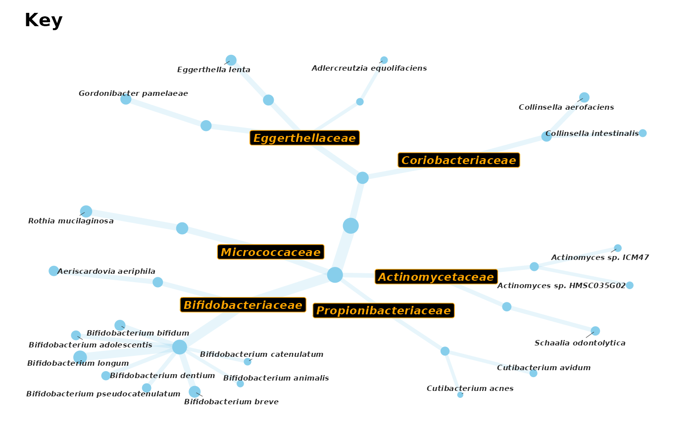

Draw labelled key to accompany taxatree_plots
taxatree_plotkey(
data,
...,
size_stat = list(prevalence = prev),
node_size_range = c(1.5, 5),
edge_width_range = node_size_range * 0.8,
size_guide = "none",
size_trans = "identity",
colour = "lightgrey",
edge_alpha = 0.7,
title = "Key",
title_size = 14,
taxon_renamer = identity,
.combine_label = any,
.draw_label = TRUE,
.calc_label = TRUE,
layout = "tree",
layout_seed = NA,
circular = identical(layout, "tree"),
node_sort = NULL,
add_circles = isTRUE(circular),
drop_ranks = TRUE
)psExtra (or phyloseq)
logical conditions for labelling e.g. rank == "Phylum", p.value < 0.1 | taxon %in% listOfTaxa
named list of length 1, giving function calculated for each taxon, to determine the size of nodes (and edges). Name used as size legend title.
min and max node sizes, decrease to avoid node overlap
min and max edge widths
guide for node sizes, try "none", "legend" or ggplot2::guide_legend()
transformation for size scale you can use (the name of) any transformer from the scales package, such as "identity", "log1p", or "sqrt"
fixed colour and fill of nodes and edges
fixed alpha value for edges
title of plot (NULL for none)
font size of title
function that takes taxon names and returns modified names for labels
all or any: function to combine multiple logical "label" values for a taxon (relevant if taxatree_stats already present in data)
should labels be drawn, or just the bare tree, set this to FALSE if you want to draw customised labels with taxatree_plot_labels afterwards
if you already set labels with taxatree_label:
set this to FALSE to use / avoid overwriting that data
(ignores ... if FALSE)
any ggraph layout, default is "tree"
any numeric, required if a stochastic igraph layout is named
should the layout be circular?
sort nodes by "increasing" or "decreasing" size? NULL for no sorting.
Use tax_sort() before taxatree_plots() for finer control.
add faint concentric circles to plot, behind each rank?
drop ranks from tree if not included in stats dataframe
ggplot
library(ggplot2)
# Normally you make a key to accompany taxatree_plots showing stats results
# So see ?taxatree_plots examples too!
#
# You can also use the taxatree key visualization just to help understand your
# tax_table contents and hierarchical structure
shao19 %>%
ps_filter(family_id %in% 1:5) %>%
tax_filter(min_prevalence = 7) %>%
tax_fix() %>%
tax_agg("genus") %>%
tax_prepend_ranks() %>%
taxatree_plotkey(rank %in% c("phylum", "genus"))
# # Let's look at some of the most prevalent Actinobacteria
actinoOnlyPhylo <- shao19 %>%
tax_select("Actinobacteria", ranks_searched = "phylum") %>%
tax_filter(min_prevalence = 100)
actinoOnlyPhylo %>%
tax_mutate(order = NULL) %>%
tax_sort(by = "prev", at = "species", tree_warn = FALSE) %>%
taxatree_plotkey(
circular = FALSE, rank != "genus",
.draw_label = FALSE, # suppress drawing now so we can make custom labels after
size_guide = "legend", colour = "skyblue", edge_alpha = 0.2
) %>%
taxatree_plot_labels(
circular = FALSE, # be sure you match the plotkey layout
fun = geom_text, fontface = "bold.italic", size = 2.5, hjust = 0,
nudge_y = 0.1 # nudge y if you want to nudge x (due to coord_flip!)
) +
coord_flip(clip = "off") +
scale_y_reverse(expand = expansion(add = c(0.2, 2))) +
theme(legend.position = c(0.15, 0.25), legend.background = element_rect())
# You can even choose other tree layouts from igraph (e.g. kk)
# and configure multiple styles of custom labels on one plot
set.seed(1) # set seed for reproducibility of ggrepel label positions
actinoOnlyPhylo %>%
tax_mutate(order = NULL) %>%
taxatree_label(rank == "family", .label_var = "family_lab") %>%
taxatree_label(rank == "species", .label_var = "species_lab") %>%
taxatree_plotkey(
circular = FALSE, rank != "genus", layout = "kk",
.draw_label = FALSE, # important not to draw the default labels
colour = "skyblue", edge_alpha = 0.2
) %>%
taxatree_plot_labels(
circular = FALSE, label_var = "family_lab", fun = geom_label,
fontface = "bold.italic", colour = "orange", fill = "black", size = 3
) %>%
taxatree_plot_labels(
circular = FALSE, label_var = "species_lab", fun = ggrepel::geom_text_repel,
fontface = "bold.italic", size = 2, force = 20, max.time = 0.1
)
